Decouvrez nos different Menu
- ENTRER
- TERRE
- EAU
- FEU
- DOUCEURS SOLANNELLES
- ACCORDS
ENTRER
Le Soufle pour eveiller sans alourdir


TERRE
Nos racines, sublimees


EAU
Le frais, Cuissons juste,sauces legeres
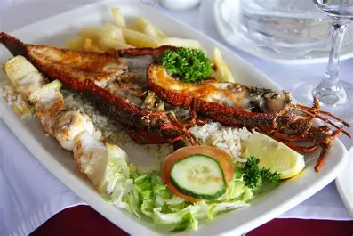
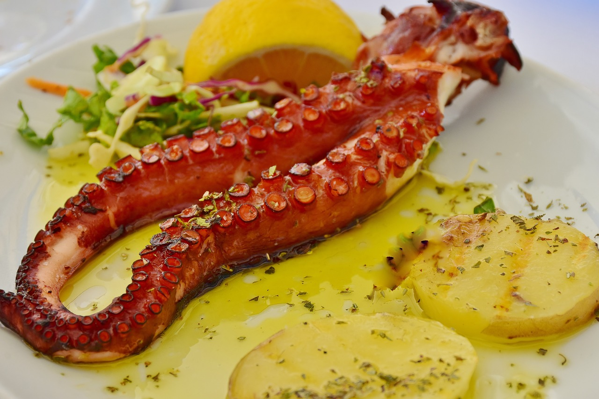
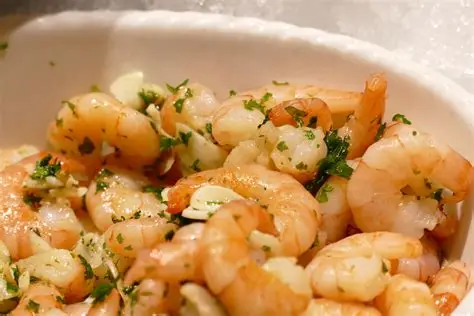
FEU
Puissance, la force de SOLENN
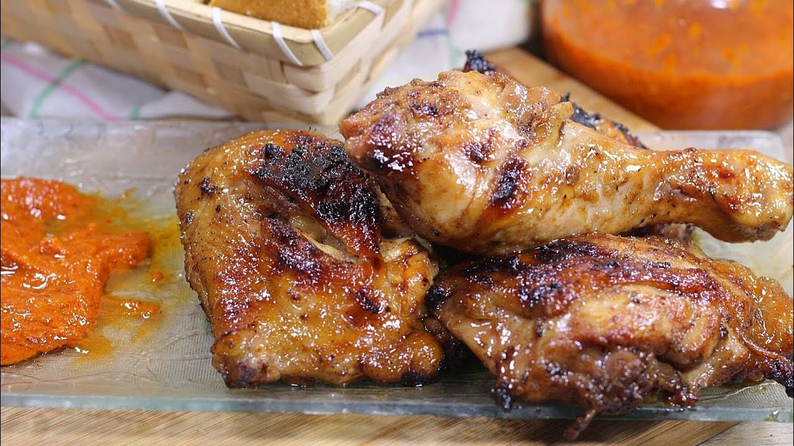
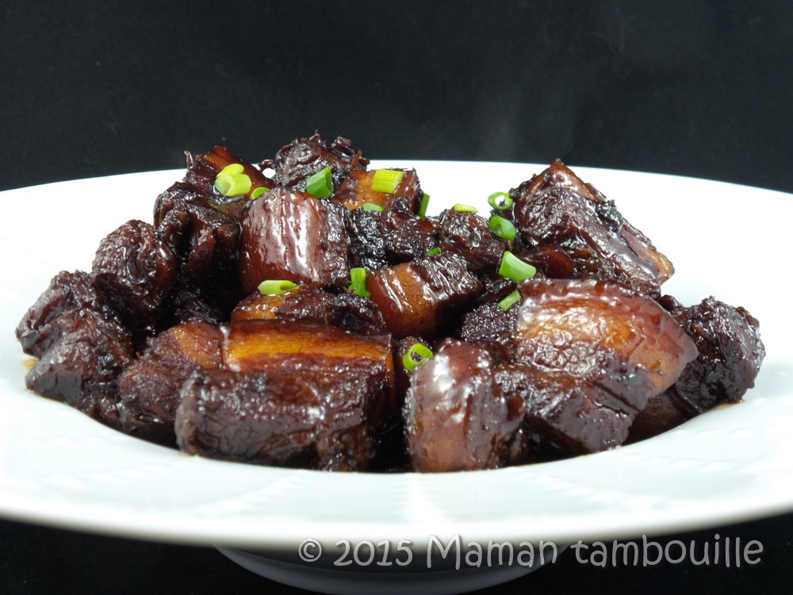
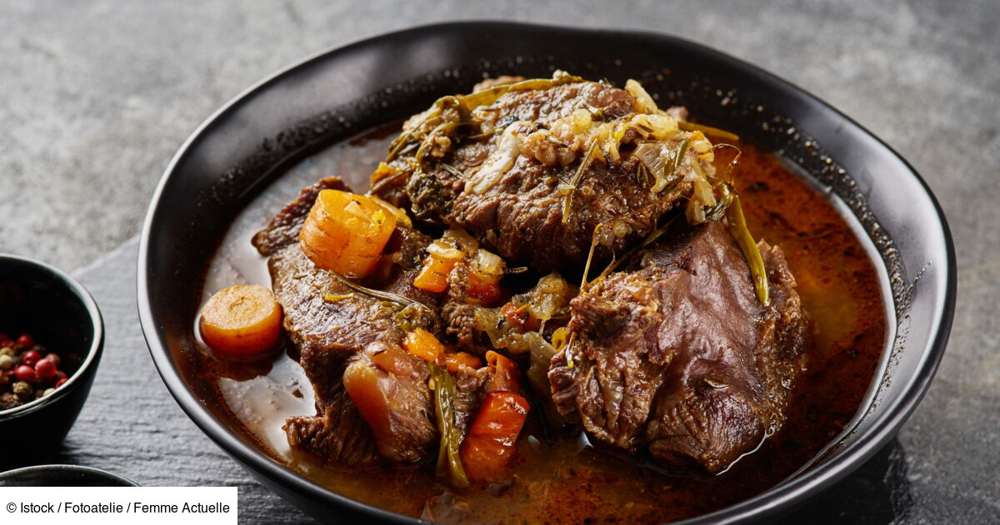
DOUCEURS SOLANNELLES
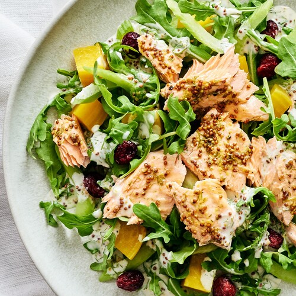
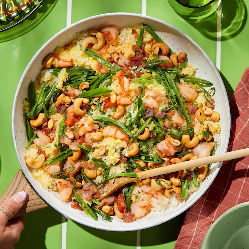
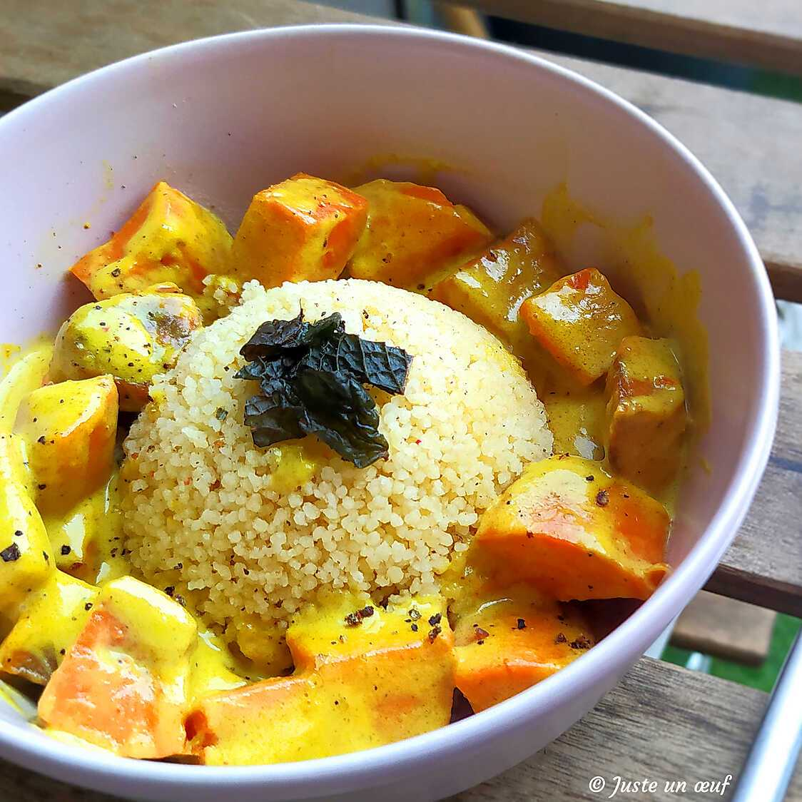
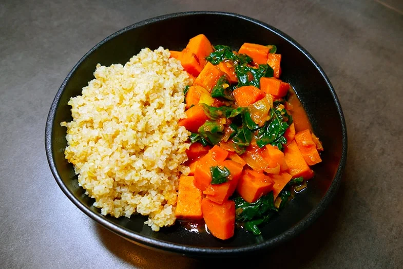
ACCORDS
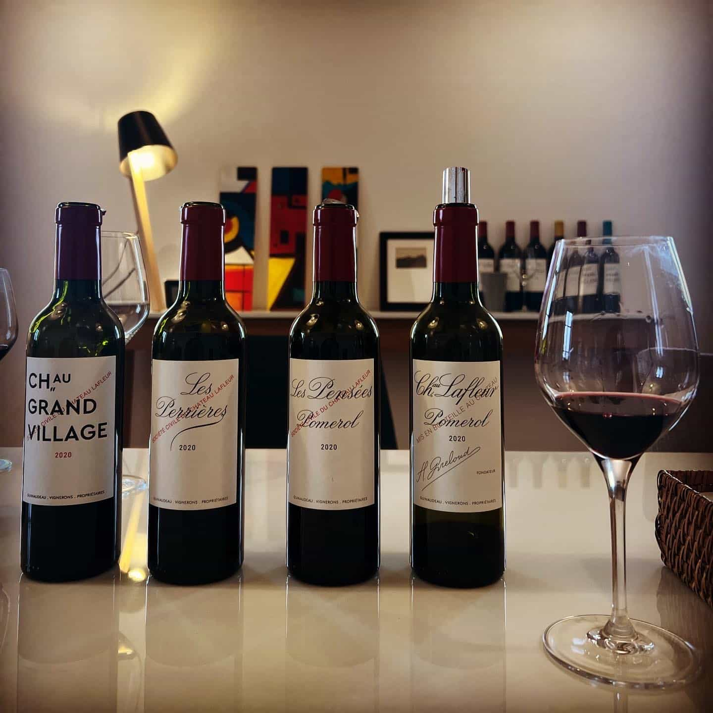
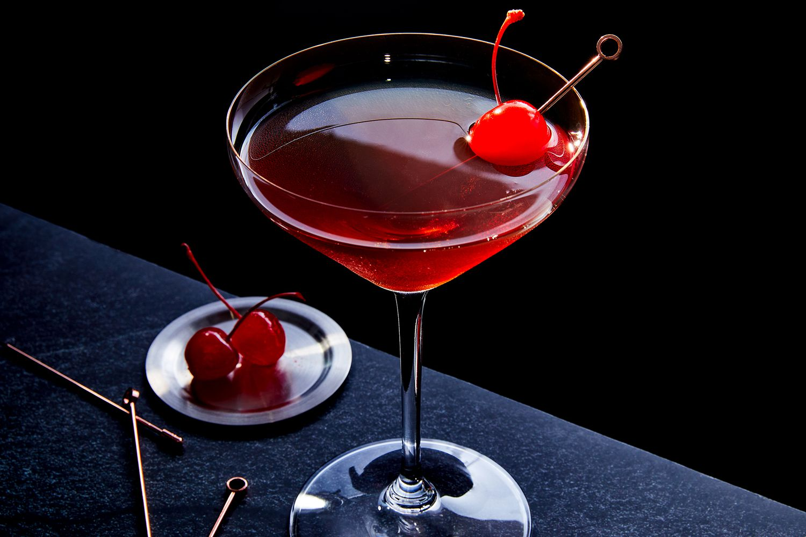